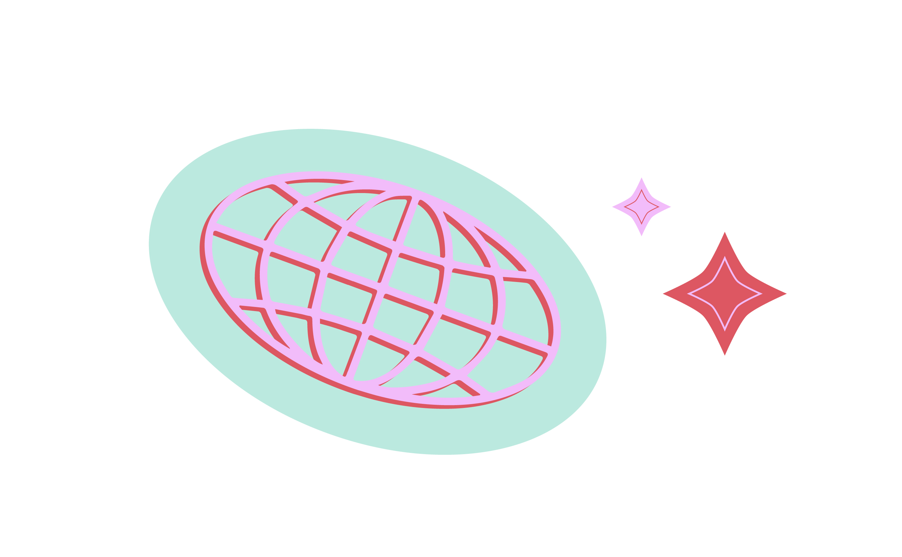
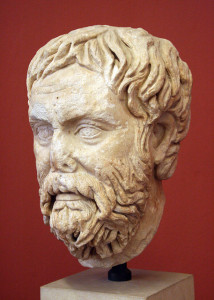
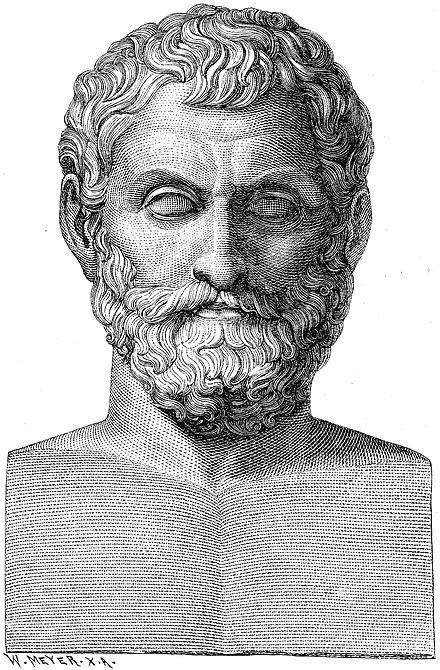
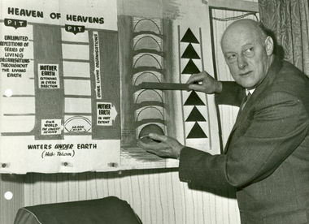
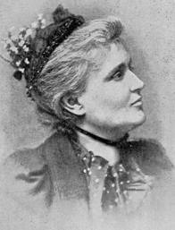
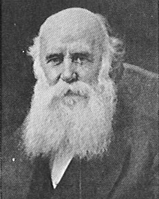
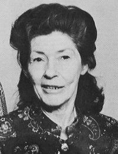

Flat Earth
Why the Earth is
actually 100% flat
This is the home of the world-famous Flat Earth
Society, a place for free thinkers and the intellectual
exchange of ideas.

Experimental
Evidence
The following sections contain experimental evidence in favor of a Flat Earth.
*Flat Earth
01
The Bedford
Canal Experiments
The classic Flat Earth water convexity experiments were described in the book Earth Not a Globe by Samuel Birley Rowbotham. Rowbotham lives near the canal and performs the experiment numerous times over a long period of time. The Bedford Canal is a man-made canal which was selected as the most ideal location for the types of experiments performed due to the narrow passageways and low disturbance of the water's surface. Of special interest, and in regards to the popularized subject of refraction, we look at the second experiment in the text.
02
Sinking Ship
Effect
The Sinking Ship Effect is often used as evidence of the earth's rotundity. It was one of the first proofs of Aristotle and other philosophers. It was based primarily upon this phenomenon that the earth was declared by the ancients to be globular. It has been found that when the phenomenon is studied with modern methods, such as through long period time-lapse photography, that the Sinking Ship Effect is not consistent. The effect appears to come and go over time.
03
The Bishop
Experiment
IF the earth is a globe, and is 24,900 English statute miles in circumference, the surface of all standing water must have a certain degree of convexity--every part must be an arc of a circle. From the summit of any such arc there will exist a curvature or declination of 8 inches over the first statute mile. Over two miles the fall will be 32 inches; by the end of the third mile, 72 inches, or 6 feet, as shown in this chart. Correcting for the height of the observer of about 20 inches, when looking at the opposite beach over 23 miles away there should be a bulge of water obscuring objects up to 300 feet above the far beach. There isn't. Even accounting for refraction, the amount hidden should be around 260 feet - seeing down to the shoreline should be impossible.
Historical Figures
Pyrrho
Pyrrho (c. 360 B.C.E. - c. 275 B.C.E.), a Greek philosopher from Elis, was credited in antiquity as being the first skeptic philosopher and the inspiration for the school known as Pyrrhonism.

Thales
Thales of Miletus (624 BC - 546 BC) is considered by many to be "the first Greek philosopher". His denial of mythology as an acceptable explanation for natural phenomena is a fundamental component of the scientific revolution.

Samuel Shenton
Samuel Shenton, a Fellow of the Royal Astronomical Society and the Royal Geographic Society, founded the Flat Earth Society in 1956, after renaming it from the Universal Zetetic Society. He led the Flat Earth Society from its founding in 1956 until his death in 1971.

Lady Blount
Lady Elizabeth Anne Mould Blount was a vocal advocate of Flat Earth theory in late 19th and early 20th Centuries and one of the founders of the Universal Zetetic Society. She worked extensively with Albert Smith ('Zetetes') to propound their Flat Earth viewpoint.

Alexander Dowie
ohn Alexander Dowie, May 25, 1847 – March 9, 1907 (aged 59), was a significant Scottish clergyman in the United States of America. He was the founder of the city of Zion, Illinois, and the Christian Catholic Apostolic Church. He was an evangelist and faith healer.

Marjory Johnson
Marjory Johnson was the wife of Charles K. Johnson, leader of the Flat Earth Society from 1971 until his death in 2001. Marjory, a native Australian, met Charles in 1959 in a San Francisco record store. They were eventually married and Marjory moved to the United States.

For more info
follow me • follow me • follow me • follow me • follow me • follow me • follow me • follow me • follow me • follow me • follow me • follow me • follow me • follow me • follow me • follow me • follow me • follow me • follow me • follow me • follow me • follow me • follow me • follow me •